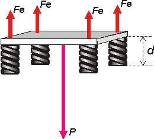

NO ME SALEN
PROBLEMAS RESUELTOS DE FÍSICA DEL CBC
|
|

|
5.03- Para proteger a una balanza contra vibraciones,
se la coloca sobre una placa de mármol
rectangular, de 80 kg. Ésta descansa sobre cuatro
resortes, que a su vez se apoyan sobre una mesa
horizontal.
Si cada resorte tiene una longitud de 5 cm
cuando está descargado, y una constante elástica
de 10.000 N/m, hallar a qué distancia de la mesa
queda la placa, en su posición de equilibrio
sin la balanza.
Esta vez tocó un problema bien sencillo. Te hago un esquemita y el DCL |
|  |
Bueno, supongo que estarás de acuerdo. Ahí ves claramente, por Newton, que
4 Fe = P
de modo que
Fe = P / 4
Pero además sabés que
Fe = k Δx
Si juntamos las dos ecuaciones tenemos que |
|
|
|
k Δx = P / 4
Δx = P / 4 k
donde Δx es lo que esta comprimido cada resorte (como los cuatro son iguales, todos están comprimidos lo mismo y la placa de mármol queda horizontal)
Supongo que no hay problema en que observemos que:
d = l0 — Δx
donde l0, son los 5 cm (0,05 m) de longitud de los resortes sin comprimir.
Concluyendo:
d = l0 — P / 4 k
|
|
|
|
|
|
| |
|
 |
| DESAFIO: si la constante de los resortes valiese el doble ¿cuánto se comprimiría cada resorte? |
|
| Algunos derechos reservados.
Se permite su reproducción citando la fuente. Última actualización oct-06. Buenos Aires, Argentina. |
|
|
|